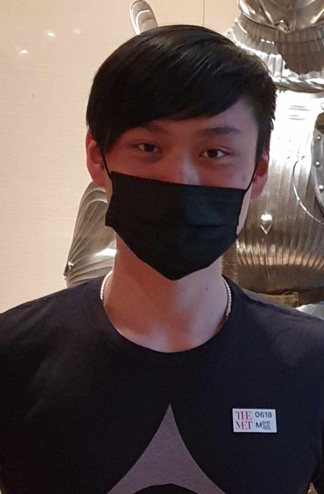

Shaohang Lin

Summary
I am Shaohang, you can call me Shao! I am a rising Junior at Queens College studying Computer Science. I’ve served 5 years in the Marines as a radio technician and decided to attend school afterwards. I am motivated to learn and study computer science as it provides a flexible career path that keeps me interested!
Education
Bachelor of Science, Computer Science, Queens College, Queens, NY Expected Graduation June 2025
Work Experience
Marines Corps, Okinawa, Japan Assistance Maintenance Chief (Sergeant) June 2016 to August 2021
- Developed communication skills through coordinating different events between internal and external contacts within the designated groups.
- Installed, troubleshooted and repaired large volumes of communication equipment.
- Supervised 15 technicians to complete quarterly inspections, quality controls, service requests and unit maintenance missions within the given deadlines.
- Mentored individuals under charge so the section remains self-sufficient if there are unexpected gaps in staffing.
Tech Incubator at Queens College July 2023 to August 2023
- Wordpress website creation, maintenance, and auditing
- Researched AI tools including chatGPT and Midjourney for commercial use
- React Native web develpment
Skills
- Programming Languages: C++, Java, Javascript, HTML, CSS
- IDE: Eclipse, Microsoft Visual Studio
- Proficient in Microsoft Office (Excel, Access, Outlook, Word, and PowerPoint)
- Good written and verbal communication skills
- Key skills: Analytical, trouble shooting, problem solving, leadership
- Core qualities: Organized, dependable, detail-oriented and a team player
Academic Projects
- Develop a program to accept an input file and sort the text with the use of regex.
- Programmed a chess simulation to demonstrate time and space complexities in move calculations.
- Solve shortest path simulations using recursion and dynamic memory.
Hobbies
Contact